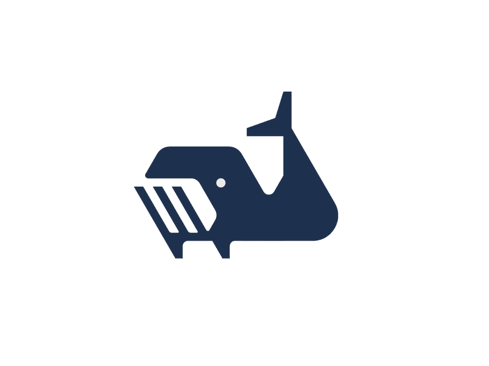

<ul nz-menu nzMode="horizontal">
    <li class="logoli" routerLink="/" nz-menu-item>
        
    </li>
    <li routerLink="/" nz-menu-item>
        <span nz-icon nzType="home" nzTheme="outline"></span>
        Accueil
    </li>
    <li *ngIf="!(isLoggedIn | async)" routerLink="/login" nz-menu-item>
        <span nz-icon nzType="calendar" nzTheme="outline"></span>
        Rendez-vous
    </li>
    <li *ngIf="(isLoggedIn | async)" routerLink="/planning" nz-menu-item>
        <span nz-icon nzType="calendar" nzTheme="outline"></span>
        Rendez-vous
    </li>
    <li routerLink="/contact" nz-menu-item>
        <span nz-icon nzType="mail" nzTheme="outline"></span>
        Nous contacter
    </li>
    <div class="user">
        <li *ngIf="!(isLoggedIn | async)" nz-menu-item>
            <button routerLink="/login" nz-button nzType="primary" nzShape="round"><span nz-icon nzType="login"
                    nzTheme="outline"></span>Se connecter</button>
        </li>
        <li *ngIf="!(isLoggedIn | async)" nz-menu-item>
            <button routerLink="/register" nz-button nzType="primary" nzShape="round"><span nz-icon nzType="user-add"
                    nzTheme="outline"></span>S'enregistrer</button>
        </li>
        <li *ngIf="(isLoggedIn | async)" nz-menu-item>
            <button routerLink="/profile" nz-button nzType="primary" nzShape="round"><span nz-icon nzType="user"
                    nzTheme="outline"></span>{{
                currentUser.name }}</button>
        </li>
        <li *ngIf="(isLoggedIn | async)" nz-menu-item>
            <button routerLink="/login" nz-button nzType="primary" (click)="logout()" nzShape="round"><span nz-icon
                    nzType="logout" nzTheme="outline"></span>Se deconnecter</button>
        </li>
    </div>
</ul>